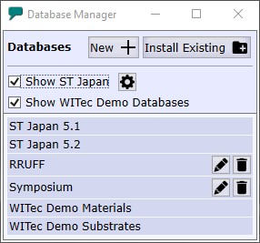

|
数据库管理器
|

数据库列表显示所有可用于搜索的数据库。
创建新数据库
创建一个新的客户数据库。数据库文件自动存储在专用的 WITec 数据库目录中。
您可以使用 TrueMatch 菜单备份和恢复您的数据库。
安装现有
在此处您可以选择一个自定义数据库文件，该文件将安装到专用的 WITec 数据库目录中。
显示 ST Japan
如果选中，ST Japan 数据库可用于搜索。如果您没有带访问文件的加密狗，您可以使用 ST Japan 的演示类别。
如果您没有购买 ST Japan 数据库，请取消选中。
ST Japan 选项
仅供 WITec 支持团队使用。
显示 WITec 演示数据库
尚未支持：如果选中，WITec 演示数据库可用于搜索。如果您不需要这些数据库，请取消选中。
重命名所选数据库
重命名所选数据库。硬盘上的文件名将被更改。
删除所选数据库
从磁盘中删除选定的客户数据库。ST Japan 和 WITec 演示数据库无法删除。